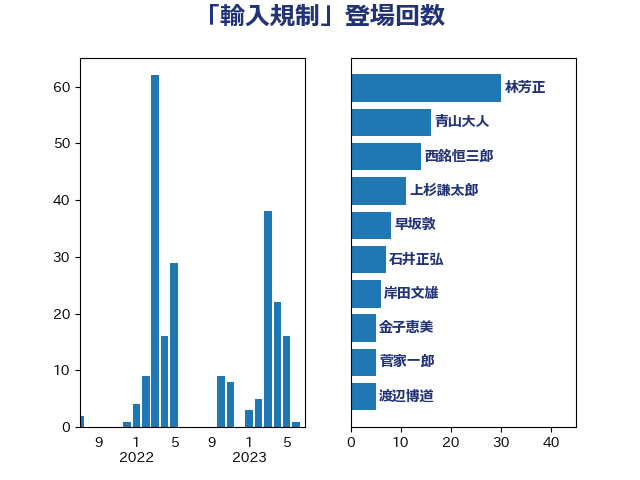

単語「輸入規制」

| 林芳正 | 自由民主党 | 30 回 |
| 青山大人 | 立憲民主党 | 16 回 |
| 西銘恒三郎 | 自由民主党 | 14 回 |
| 上杉謙太郎 | 自由民主党 | 11 回 |
| 早坂敦 | 日本維新の会 | 8 回 |
| 石井正弘 | 自由民主党 | 7 回 |
| 岸田文雄 | 自由民主党 | 6 回 |
| 金子恵美 | 立憲民主党 | 5 回 |
| 菅家一郎 | 自由民主党 | 5 回 |
| 渡辺博道 | 自由民主党 | 5 回 |
| 梅谷守 | 立憲民主党 | 5 回 |
| 野村哲郎 | 自由民主党 | 4 回 |
| 田名部匡代 | 立憲民主党 | 4 回 |
| 梅村みずほ | 日本維新の会 | 4 回 |
| 進藤金日子 | 自由民主党 | 3 回 |
| 若松謙維 | 公明党 | 3 回 |
| 緑川貴士 | 立憲民主党 | 3 回 |
| 細田健一 | 自由民主党 | 3 回 |
| 野中厚 | 自由民主党 | 2 回 |
| 秋葉賢也 | 自由民主党 | 2 回 |
| 秋本真利 | 無所属 | 2 回 |
| 横山信一 | 公明党 | 2 回 |
| 本田太郎 | 自由民主党 | 2 回 |
| 掘井健智 | 日本維新の会 | 2 回 |
| 中村裕之 | 自由民主党 | 2 回 |
| 長友慎治 | 国民民主党 | 1 回 |
| 鎌田さゆり | 立憲民主党 | 1 回 |
| 鈴木義弘 | 国民民主党 | 1 回 |
| 鈴木敦 | 国民民主党 | 1 回 |
| 野上浩太郎 | 自由民主党 | 1 回 |
| 紙智子 | 日本共産党 | 1 回 |
| 石川昭政 | 自由民主党 | 1 回 |
| 石垣のりこ | 立憲民主党 | 1 回 |
| 玄葉光一郎 | 立憲民主党 | 1 回 |
| 渡辺周 | 立憲民主党 | 1 回 |
| 浅野哲 | 国民民主党 | 1 回 |
| 浅田均 | 日本維新の会 | 1 回 |
| 河西宏一 | 公明党 | 1 回 |
| 池畑浩太朗 | 日本維新の会 | 1 回 |
| 江田憲司 | 立憲民主党 | 1 回 |
| 武部新 | 自由民主党 | 1 回 |
| 徳永エリ | 立憲民主党 | 1 回 |
| 平山佐知子 | 無所属 | 1 回 |
| 小熊慎司 | 立憲民主党 | 1 回 |
| 塩田博昭 | 公明党 | 1 回 |
| 坂井学 | 自由民主党 | 1 回 |
| 吉田とも代 | 日本維新の会 | 1 回 |